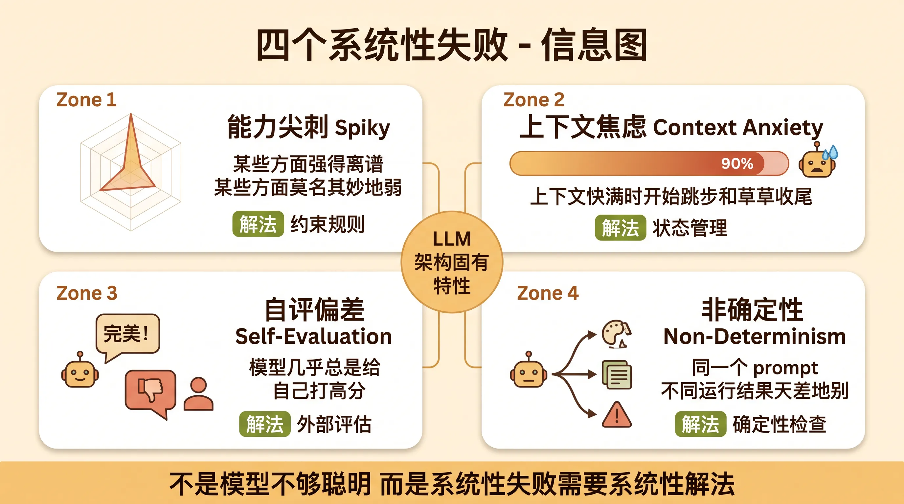
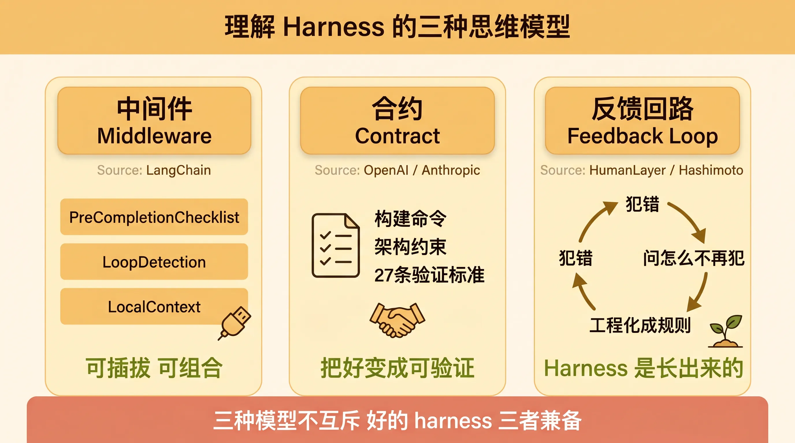
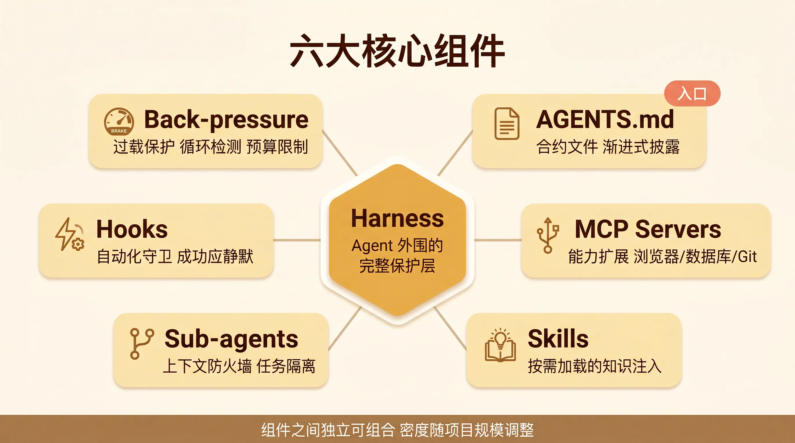
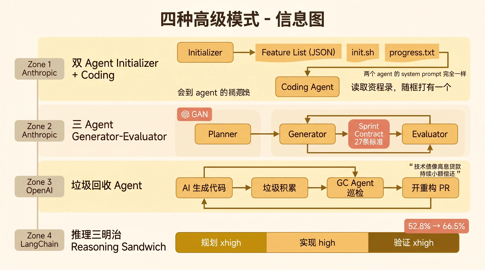
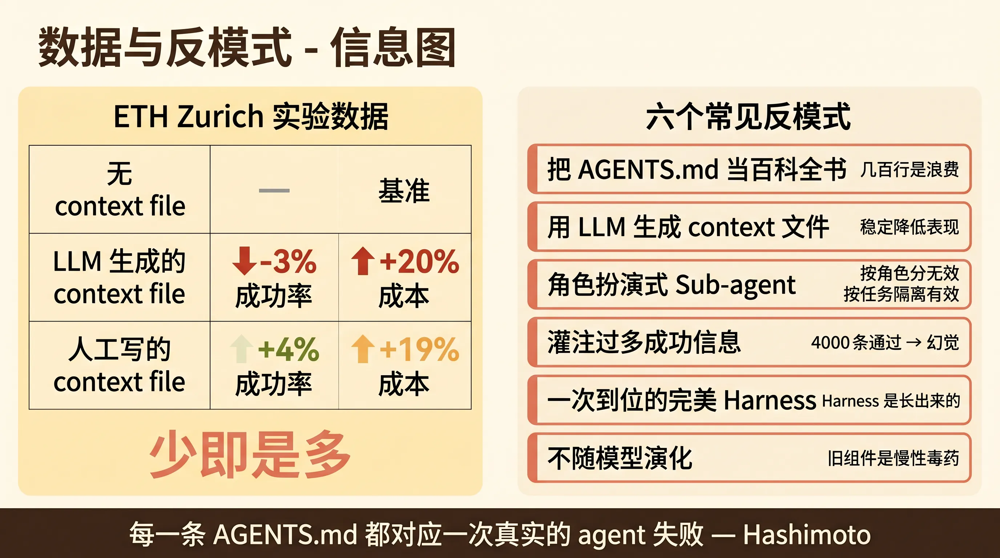

Harness Engineering 深度指南：为什么 AI 需要缰绳，以及怎么套
关于 Harness Engineering 这个概念怎么从一篇个人博客在两周内变成行业共识的，我之前写过一篇全景科普，感兴趣的可以去看那篇。
这篇文章做另一件事。我想回答两个更底层的问题：
第一，为什么模型能力已经这么强了，我们还需要在它外面套一层东西？ 模型到底在哪些地方系统性地失败？这些失败是偶然的还是必然的？
第二，如果需要套，具体怎么套？ AGENTS.md 写什么不写什么？MCP、Skill、Sub-agent、Hook 分别解决什么问题？怎么搭配使用？常见的坑在哪？
两个问题合在一起，就是这篇文章的全部内容。
一、模型为什么会失败：四个系统性问题
在讨论解决方案之前，先理解问题。Harness Engineering 的存在不是因为模型”不够聪明”，而是因为模型在几个维度上存在系统性的、可预测的失败模式。这些模式不会因为模型变强就消失，它们是 LLM 作为架构的固有特性。
1.1 能力是尖刺状的
LangChain 的描述最精准，模型的能力是”spiky”的，某些方面强得离谱，某些方面莫名其妙地弱。同一个模型可以写出精妙的算法实现，却在 CSS 居中上反复犯错。可以在复杂的状态管理上表现优秀，却在简单的字符串格式化上翻车。
这不是随机波动。模型的弱点分布是稳定的、可预测的，但不是均匀的。你用得越多，就越能感受到这种”尖刺感”。
这意味着什么？意味着你不能对模型的能力做均匀假设。”模型能写代码”这个笼统的判断没有操作意义。你需要知道它在哪类任务上强，在哪类任务上弱，然后针对弱项加约束。
Harness 的第一个作用就是把这些尖刺修剪成你需要的形状。模型擅长的部分放手让它做，模型容易翻车的部分用规则、测试、脚本把它框住。
1.2 上下文焦虑
Anthropic 在工程博客里详细描述了这个现象。Agent 在运行过程中，随着上下文窗口逐渐填满，会表现出一种”焦虑感”：开始跳过步骤、简化实现、草草收尾。
Anthropic 原话描述的两种失败模式：
第一种，agent 试图一次性做太多事情，导致在某个功能的实现中途耗尽上下文。下一个 session 启动时，面对的是一个半完成、无文档的状态，得花大量时间猜测之前发生了什么。
第二种，agent 看到已经有一些功能完成了，就宣布整个项目完工。实际上还有大量未完成的功能。
这两种模式的共同本质是上下文不够用时，模型不会说”我搞不定了”，而是假装已经做完了。
Sonnet 4.5 的 context anxiety 严重到 compaction（原地压缩上下文）都压不住，必须完全清空上下文重新开始。Opus 4.5 之后大幅缓解，但这个问题在长任务中依然存在。
Harness 的第二个作用就是管理上下文生命周期。通过结构化的状态文件、增量任务分配、合适的 session 切分策略，让 agent 在有限的上下文内做出可靠的产出。
1.3 自我评价偏差
这是一个反直觉但已经被反复验证的事实：让模型评价自己的工作，它几乎总是给自己打高分。
Anthropic 的 Harness Design 文章里记录了最直接的证据。让 Generator Agent 写完代码后自我检查，它”confidently praising the work, even when, to a human observer, the quality is obviously mediocre”。尤其是在设计这种主观任务上，没有通不过的测试用例，agent 基本上是在往自己脸上贴金。
这个问题的根因不是模型”不诚实”，而是 LLM 的自注意力机制天然偏向于认可自己生成的内容。生成和评估共享同一套权重，自我审视是架构层面的困境。
这就是为什么 Anthropic 的三 Agent 架构把 Generator 和 Evaluator 彻底分开，灵感来自 GAN（生成对抗网络）。评估者不是另一个”更仔细的自己”，而是一个独立的、有自己评判标准的 Agent。
Harness 的第三个作用就是提供外部的、独立的评估信号，打破自我评价的偏差。
1.4 非确定性
同一个 prompt，不同的运行，结果可能天差地别。这不是 bug，是 LLM 的采样机制导致的特性。temperature、top_p 等参数控制的是概率分布，不是确定性输出。
这意味着偶尔的一次成功不能说明任何问题。你看到的可能是模型 10 次运行中最好的那一次，而日常使用中碰到的可能是平均水平甚至最差的那一次。
Harness 的第四个作用是用确定性的系统来兜底非确定性的模型。测试、lint、类型检查、架构约束，这些都是确定性的。模型输出可能波动，但测试要么过要么不过，lint 要么报错要么不报错。确定性信号是可靠反馈的基石。
四个问题总结一下：能力尖刺、上下文焦虑、自评偏差、非确定性。这四个问题分别对应了 harness 的四类组件，约束规则、状态管理、外部评估、确定性检查。理解了问题，后面看解决方案就知道为什么需要它们了。

二、Harness 的本质：三种思维模型
在拆解具体组件之前，先建立对 harness 的整体认知。理解 harness 的最好方式不是把它当成一个”配置文件”，而是用几个不同的思维模型来理解它。
2.1 Harness 是中间件
LangChain 最早把这个模型说清楚了。Harness 是夹在模型和任务之间的中间件层。
模型是原始的计算引擎，有强大的通用能力但缺乏特定任务的可靠性。Harness 是中间层，负责把原始能力”塑形”成你需要的形状。任务是最终目标。
这个模型的精髓在于可插拔。中间件可以增减、替换、组合。LangChain 自己就设计了三件可插拔的中间件：
PreCompletionChecklist，agent 退出前强制对照原始任务规格检查一遍。LoopDetection，追踪每个文件的编辑次数，超过阈值就注入”换个思路”的提示。LocalContext，启动时扫描工作目录和可用工具，帮 agent “入职”。
这三件中间件独立工作，互不依赖。你可以在任何项目上只装其中一件，也可以三件都装。这种可组合性是中间件模型的核心优势。
2.2 Harness 是合约
OpenAI 的做法更接近这个模型。他们的 AGENTS.md 本质上是一份合约，定义了 agent 和项目之间的约定。
合约里包含：构建命令、测试命令、架构约束、代码风格要求、质量评分卡、执行计划和进度日志。每一条都有明确的”通过”或”不通过”判定。
Anthropic 的做法更进一步。他们的三 Agent 架构中，Generator 和 Evaluator 在每个 Sprint 开始前会先”谈判”，对齐什么是”做完了”才动手写代码。单单一个 Sprint 就有 27 条验证标准。这不是模糊的”写好点”，而是精确的合约条款。
合约模型的核心是**把”好”变成”可验证”**。”代码质量高”是主观的，”所有测试通过、lint 零告警、类型检查通过、架构约束满足”是客观的。Harness 的价值之一就是做这种转换。
2.3 Harness 是反馈回路
HumanLayer 最强调这个维度。Harness 不是静态的配置，而是动态的反馈系统。
核心循环：agent 犯错 → 你问”怎么让它不再犯？” → 把答案工程化成规则/测试/脚本/钩子 → agent 下次不再犯。
这个循环是 harness engineering 的生命线。Mitchell Hashimoto 说得最直接，”each line in that file is based on a bad agent behavior”，他 Ghostty 项目的 AGENTS.md 里每一行都对应一次 agent 曾经犯过的错误。
反馈回路不只是”写规则”。它还包括：
Hook 脚本自动化。Agent 停止时自动跑格式化和类型检查，通过就静默，失败就重新激活 agent。这是把人工检查的环节自动化了。
Build-Self-Verify 循环。Agent 构建后运行测试，基于失败信息修复，再测试，循环直到通过。关键是只展示失败，不展示成功。HumanLayer 发现把 4000 条通过的测试结果灌进 context 会导致模型产生幻觉。
垃圾回收 Agent。OpenAI 的团队最初每周五花 20% 工时清理 AI 生成的垃圾代码。后来用后台 Codex 任务替代：定期扫描漂移、更新质量评分、开针对性重构 PR。技术债像高息贷款，持续小额偿还比让它复利堆积好。
三种思维模型不是互相排斥的，而是从不同角度看同一个东西。中间件关注架构、合约关注精确性、反馈回路关注演化。好的 harness 三者兼备。

三、六大核心组件详解
现在进入最实操的部分。Harness 由哪些具体组件构成，每个组件做什么、不做什么、怎么配置。
3.1 AGENTS.md / CLAUDE.md：合约文件
这是 harness 的入口，也是被误解最多的组件。
它是什么： 一份定义 agent 和项目之间约定的文件。Agent 每次启动时会读取它，获取项目的基本规则和约束。
写什么：
- 构建和测试命令。
npm run build、cargo test、make lint这些。模型无法推断你的具体工具链。 - 项目特有的约定。文件命名规范、目录结构含义、特定的编码模式。
- 已知的坑和特殊处理。某些文件不要碰、某些配置项不能改、某些 API 的特殊行为。
- 架构约束。模块间的依赖方向、数据流向、不允许的反模式。
不写什么：
- 仓库结构和架构概览。ETH Zurich 的研究明确证明，包含这类信息并没有减少 agent 的文件定位时间，反而增加了 context 负担。
- 通用编程知识。”写干净的代码””遵循 SOLID 原则”这些模型本来就会做，写了白写。
- LLM 生成的内容。ETH Zurich 的数据很清楚，LLM 生成的 context file 稳定降低表现 -3%。直接丢掉。
- 所有你能想到的东西。人工写的 context file 只比没有 context file 好 +4%。少即是多。
OpenAI 的做法值得学习。 他们的 AGENTS.md 只有约 100 行，像一个目录页，指向结构化的 docs/ 目录。里面包含带验证状态的设计文档、架构文档、每个域的质量评分卡、带进度日志的执行计划。
原则是渐进式披露。Agent 从一个小而稳定的入口出发，按需深入。不要在 agent 还没开始干活的时候就塞给它一整本手册。
Anthropic 的额外技巧： 用 JSON 而非 Markdown 存储结构化数据（比如 feature list）。原因是”模型不太会乱改 JSON”。对于需要 agent 维护状态的文件，选一个模型不太容易自作主张修改的格式。
3.2 MCP Servers：能力扩展
它是什么： Model Context Protocol，一种标准化的方式给 agent 提供新工具。MCP server 就像一个 USB 接口，把外部能力（浏览器、数据库、文件系统、API）接入 agent。
为什么重要： Agent 只能操作它能感知到的东西。没有文件系统的 MCP，agent 看不到文件。没有浏览器的 MCP，agent 无法做端到端测试。没有数据库的 MCP，agent 验证不了数据变更。
常见的 MCP 类型：
- 文件系统 MCP：读写文件，大多数 agent 默认就有
- 浏览器 MCP（Playwright/Puppeteer）：操控浏览器，做端到端测试
- 数据库 MCP：直接查询和验证数据库状态
- Git MCP：操作版本控制
- 自定义 MCP：连接你特有的系统
关键原则：只加 agent 实际需要的 MCP。 每加一个 MCP 都会增加 agent 的工具选择空间，过多选择反而让 agent 困惑。Anthropic 的经验是，给 Claude 提供 Puppeteer MCP 做端到端测试后，agent 的功能验证能力大幅提升。但同时指出，Claude 无法通过 Puppeteer 看到浏览器原生的 alert 弹窗，依赖这些弹窗的功能往往 buggier。
3.3 Skills：渐进式知识注入
它是什么： 打包好的知识 + 指令组合。Agent 不是一次性加载所有 skill，而是在需要时才读取对应的 skill 文件。
为什么比直接写进 AGENTS.md 更好： 因为 AGENTS.md 是每次都加载的，skill 是按需加载的。这实现了真正的渐进式披露。
有效的 skill 长什么样：
- 具体、可操作、有例子。不是”写好测试”，而是”使用 vitest 框架，测试文件放在
__tests__/目录下，每个公共函数至少一个正向测试和一个边界测试”。 - 只在 agent 需要时加载。比如只有当 agent 要写 React 组件时才加载 React skill。
- 每条规则对应一个真实的失败案例。Hashimoto 的原则。
HumanLayer 的实践： 他们把 skill 作为渐进式披露的主要机制。Agent 默认只知道项目的基本约定，当遇到特定类型的任务时，才加载对应领域的深度知识。这避免了在 agent 还没开始工作时就塞给它一堆它可能用不到的信息。
3.4 Sub-agents：上下文防火墙
它是什么： 主 agent 可以启动子 agent 来处理独立子任务。子 agent 运行完毕后把结果返回给主 agent。
核心认知：sub-agent 不是角色扮演，是隔离边界。
HumanLayer 明确记录了这个教训。他们最初尝试”前端工程师”/“后端工程师”这种角色扮演式分法，失败了。有效的做法是把 sub-agent 当作上下文防火墙，用来隔离独立任务，防止中间噪音污染父线程的上下文。
什么时候用 sub-agent：
- 独立的子任务，不需要和主任务共享中间状态
- 会产生大量中间信息的工作，这些信息对主任务没用但会污染上下文
- 可以并行推进的工作
什么时候不用 sub-agent：
- 紧密耦合的工作，子任务之间需要频繁协调
- 需要共享状态的任务
- 简单任务，开 sub-agent 的开销比直接做还大
Anthropic 的 Harness Design 中有一个特别精妙的应用。Planner Agent 和 Generator Agent 是两个独立的 agent，通过文件通信。Planner 写文件，Generator 读文件然后在同一个文件里追加或者新建文件，Planner 再去读。这种文件中转的方式避免了两个 agent 同时在线时的 context 污染。
3.5 Hooks：自动化守卫
它是什么： 在 agent 的特定事件（工具调用、停止等）触发时自动执行的脚本。
常见模式：
- Agent 停止时自动跑格式化 + 类型检查。通过就静默，失败就重新激活 agent。
- 文件变更时自动跑相关的测试。
- Commit 前自动跑 lint。
“成功应该静默”原则： HumanLayer 的关键发现。他们一开始把 4000 条通过的测试结果都灌进 context，导致模型产生幻觉。后来改成只展示失败。
这个原则的底层逻辑是，agent 的上下文窗口是稀缺资源。每一条”测试通过”的信息都在消耗 context，但不提供任何有用信号。只有失败才是需要 agent 关注和修复的。
Anthropic 的 Harness Design 里也有类似发现。 评估器不是看截图打分，而是真的打开网页自己点、自己截图、自己看。评估器的反馈不是”看起来不错”这种空话，而是具体的”矩形填充工具只在拖拽的起点和终点放了图块，中间区域没填上”这种可操作的 bug 报告。
3.6 Back-pressure：过载保护
它是什么： 当 agent 陷入困境时，自动检测并触发干预的机制。
具体形式：
- 循环检测。LangChain 的 LoopDetection 中间件追踪每个文件的编辑次数，超过 N 次就注入”换个思路”的提示。
- 预算限制。Token 和时间上限，超出后自动停止或重新规划。
- 错误率监控。连续失败 N 次后自动切换策略。
为什么需要： Agent 陷入死循环是一个常见问题。它会反复编辑同一个文件，每次改一点，但改了又改回去，来来回回消耗大量 token。没有 back-pressure，agent 会一直转下去直到耗尽预算。
LangChain 的 Reasoning Sandwich 策略也属于这个范畴。用 xhigh 推理模式做规划和验证（确保方向对），用 high 推理模式做具体实现（避免超时）。这是一种在不同阶段调节 agent “思考强度”的 back-pressure 机制。

四、高级模式
单个组件的效果有限。真正的威力来自组件之间的组合。以下是几个经过验证的高级模式。
4.1 双 Agent 架构：Initializer + Coding
来源：Anthropic 的 “Effective Harnesses for Long-Running Agents”。
问题： 让一个 agent 连续跑多个 context window 来构建完整应用，它要么一次做太多导致半途而废，要么看到已经有一些功能就宣布完工。
解决方案： 两个角色分离的 agent。
Initializer Agent 在第一次运行时做三件事：
- 把用户的高层描述展开成 200+ 结构化 feature。比如”做一个 claude.ai 的克隆”会被拆解成”用户可以打开新对话、输入查询、按回车、看到 AI 回复”这样的具体 feature。所有 feature 初始标记为 “failing”。
- 创建
init.sh脚本，后续 agent 可以用它启动开发服务器。 - 写初始的
claude-progress.txt进度文件和初始 git commit。
Coding Agent 在后续每次运行时：
- 先跑
pwd确认工作目录。 - 读 git log 和 progress 文件了解当前状态。
- 读 feature list，选最高优先级的未完成 feature。
- 实现这一个 feature。
- 用浏览器自动化工具做端到端测试。
- 通过后标记为 “passing”，写 commit 和进度更新。
关键设计决策：
- Feature list 用 JSON 而非 Markdown。因为”模型不太会乱改 JSON”。
- “It is unacceptable to remove or edit tests because this could lead to missing or buggy functionality.” 用强措辞防止 agent 走捷径。
- 每次 session 开始先做基础功能验证，确认 app 没被上一次的改动搞坏，再做新 feature。而不是上来就加新东西。
- 两个 agent 的唯一区别是 user prompt。System prompt、工具集和 harness 完全一样。
4.2 三 Agent 架构：Generator-Evaluator 对抗
来源：Anthropic 的 “Harness Design for Long-Running Application Development”。
灵感来源： GAN（生成对抗网络）。一个生成，一个鉴别，互相博弈推动质量提升。
架构：
- Planner Agent：把用户 1-4 句话的需求展开成完整产品规格。
- Generator Agent：按 sprint 一个功能一个功能地实现。
- Evaluator Agent：用 Playwright 像真实用户一样点击测试，按四个维度打分。
Sprint Contract 机制是最精妙的部分。
Generator 和 Evaluator 在每个 Sprint 开始前会先”谈判”。Generator 提方案，Evaluator 审核方案，两个来回讨论直到达成一致，定义出什么是”做完了”。单单一个 Sprint 有 27 条验证标准。
两个 Agent 之间的通信全靠文件。一个写文件，另一个读文件然后在同一个文件里回应或者新建一个文件。这种文件中转的方式实现了异步的、可审计的协作。
Evaluator 的具体工作方式：
它拿到了 Playwright MCP，可以操控浏览器。它不是看截图打分，而是真的打开网页自己点、自己截图、自己看。
比如它发现矩形填充工具只在拖拽的起点和终点放了图块，中间区域没填上。又发现删除实体的快捷键处理有逻辑错误。还有 FastAPI 路由匹配的问题，因为路由定义顺序导致请求被错误解析。
这些都是真正要去用才会发现的 bug，Evaluator 通过 Playwright 一步步操作就抓到了。静态代码检查看不出这些问题。
4.3 垃圾回收 Agent
来源：OpenAI 的 Harness Engineering 实验。
问题： AI 生成的代码会产生”垃圾”，不一致的文档、违反架构约束的代码、逐渐漂移的质量。团队最初每周五花 20% 工时手动清理。
解决方案： 用一组后台 agent 替代人工清理。
这些 agent 定期运行，扫描代码库中的不一致，更新质量评分，开针对性的重构 PR。大部分 PR 一分钟内就能审完自动合并。
OpenAI 的原话：”Technical debt is like a high-interest loan: better to pay it down continuously in small installments than let it compound.”
这把反馈回路的理念推到了极致。不只是”agent 犯错后修 harness”，而是”agent 持续巡检，主动发现问题”。
4.4 Reasoning Sandwich
来源：LangChain。
模式： 在 agent 的不同阶段使用不同的”思考强度”。
- 规划阶段：xhigh reasoning。确保方向对，花时间想清楚。
- 实现阶段：high reasoning。平衡质量和速度，避免超时。
- 验证阶段：xhigh reasoning。确保没遗漏，仔细检查。
这个模式的核心洞察是，agent 的”思考强度”不是越高越好。全程最高强度容易超时，全程低强度容易出错。关键是在正确的阶段使用正确的强度。
LangChain 用这个策略在 TerminalBench 2.0 上把同一个模型的表现从 52.8% 拉到 66.5%，从 top 30 跃升到 top 5。

五、常见反模式
知道该做什么很重要，知道不该做什么同样重要。以下是已经被反复验证的失败模式。
5.1 把 AGENTS.md 当百科全书
最常见的错误。恨不得把项目的一切都写进 AGENTS.md，几百行甚至上千行。
ETH Zurich 的研究给出了致命一击：

| 条件 | 任务成功率变化 | 推理成本变化 |
|---|---|---|
| 无 context file | 基准 | 基准 |
| LLM 生成的 context file | -3% | +20% |
| 人工写的 context file | +4% | +19% |
人工写的 context file 只比没有好 4%，但推理成本增加了 19%。LLM 生成的更糟，直接降低表现。而且包含仓库结构和架构概览并没有减少 agent 的文件定位时间。
这个数据的意思是，你在 AGENTS.md 里多写的每一行，大概率是在浪费 token，甚至可能有害。
正确的做法是 OpenAI 的方式。AGENTS.md 约 100 行作为目录，详细信息放在按需加载的文档中。渐进式披露。
5.2 用 LLM 生成 Context 文件
看起来很直觉的做法，让 agent 分析项目然后生成 AGENTS.md。但 ETH Zurich 的数据说得很清楚，LLM 生成的 context file 稳定降低表现。
为什么？因为 LLM 不知道你的 agent 不知道什么。它生成的信息要么是 agent 本来就能推断的（浪费），要么是不准确的（有害）。有效的 context file 只包含模型无法从代码和文档推断出来的信息，比如自定义构建命令、特殊工具链、项目特有的决策背景。
5.3 角色扮演式 Sub-agent
给 sub-agent 设定”你是一个资深前端工程师”这种角色，期望它能写更好的代码。
HumanLayer 直接记录了失败经验。这种分法不起作用。有效的做法是按任务隔离，不是按角色扮演。Sub-agent 的价值在于上下文隔离，不在于角色设定。
5.4 灌注过多成功信息
把成千上万条测试通过的日志、lint 通过的输出全部塞给 agent。
HumanLayer 的教训。4000 条通过的测试结果灌进去，agent 反而产生幻觉。改成只展示失败后，表现大幅提升。
原因很简单，agent 的 context window 是稀缺资源。每一条”测试通过”都在消耗 context 但不提供有用信号。只有失败才是需要 agent 关注和修复的。”成功应该静默”。
5.5 一次到位的完美 Harness
花大量时间在项目开始时就搭建一个”完美”的 harness。
Harness 是长出来的，不是设计出来的。核心循环是”agent 犯错 → 问怎么防止 → 加到 harness → 验证”。Hashimoto 的 AGENTS.md 每一行都对应一次真实的 agent 失败。你不可能在 agent 开始工作前就预知所有失败模式。
从最小可行 harness 开始：一份精简的 AGENTS.md + 基本的测试。然后随着 agent 在你的项目中工作，逐步增加约束。
5.6 不随模型演化
模型升级后依然保留旧 harness 的所有组件。
Anthropic 的 Harness Design 记录了最清晰的演化路径。Opus 4.5 时代需要 Sprint 拆分、Context Reset、每轮 QA。Opus 4.6 发布后，Sprint 机制砍掉了，Evaluator 从每轮检查改成最后统一检查。
Prithvi Rajasekaran 的原则值得反复看：”harness 里的每一个组件都在编码一个假设，模型自己做不了这件事。随着模型变强，这些假设应该被逐个验证和淘汰。”
LangChain 也承认：”Over time models get better and you’re having to strip away structure and make your harness simpler.”
不随模型演化是 harness 的慢性死亡。它会变得越来越臃肿，直到拖累而不是帮助 agent。
六、Harness 的迭代演化
Harness 不是一劳永逸的。它有自己的生命周期。理解这个生命周期，才能用好它。
6.1 核心循环
Harness Engineering 的核心操作极其简单，就三步：
- Agent 犯了一个错
- 你问自己，怎么让它永远不再犯这个错？
- 把答案工程化成 harness 的一部分（规则、测试、脚本、hook、MCP、skill）
这个循环和敏捷开发的”回顾-改进”循环本质上一样。它不是一次性工程，是持续工程。
Hashimoto 的 AGENTS.md 是这个循环的完美体现。”Each line in that file is based on a bad agent behavior, and it almost completely resolved them all.” 不是他一次想到的，是用了 agent 一段时间后一条一条加的。
6.2 模型升级时的减法
模型升级后，第一步不是”加新东西”，而是”减旧东西”。
Anthropic 的做法是最清晰的范例：
Opus 4.5 时代：
- 需要 Sprint 机制把任务拆小块
- 需要 Context Reset 完全清空上下文重新开始
- 需要 Evaluator 每个 Sprint 都检查
Opus 4.6 时代：
- Sprint 机制砍掉。模型能自己管理大块任务了。
- Context Reset 去掉。模型的 context anxiety 大幅缓解。
- Evaluator 改成最后统一检查一轮。
减法的判断标准也很清晰。Evaluator 是否值得保留？取决于任务是否在当前模型能力边界之外。Opus 4.6 能力强了，边界外移，原来需要 Evaluator 检查的部分模型自己能搞定了。但那些还在边界外的更难的部分，Evaluator 依然有用。
换句话说，harness 组件不是固定的要或不要，而是跟模型能力动态相关的成本决策。
6.3 不同项目的 Harness 密度
不是所有项目都需要同样密度的 harness。
小型项目/脚本： 可能只需要一份几行的 AGENTS.md。几条构建命令、一两个特殊约定就够了。过度 harness 是浪费。
中型项目/应用： AGENTS.md + 基本测试 + 格式化 hook。大多数日常开发项目落在这个区间。
大型项目/平台： 完整的 harness 套件。多级文档结构、质量评分卡、垃圾回收 agent、架构约束、自定义 linter。OpenAI 的百万行实验就属于这个级别。
Greenfield vs Legacy： 全新项目的 harness 从零开始生长，干净。遗留项目的 harness 需要考虑”移植”的成本。Martin Fowler 的 Birgitta Böckeler 指出，给从未做过静态分析的代码库加 linter，你会淹没在告警里。Retrofitting harness 到遗留系统是可能的，但需要投入。
6.4 Harness 的生命周期总结
1 | 创建 → 使用 → 观察 → 改进 → 模型升级 → 减法 → 新的观察 → ... |
它是一个螺旋上升的过程。每一轮循环，你对模型能力的理解更深一层，harness 也更精炼一层。
七、几个关键判断
最后聊几个在实践中经常遇到但不容易做判断的问题。
7.1 什么时候该加组件，什么时候该等？
判断标准：这个失败是不是系统性的？
如果 agent 偶尔犯一次，可能是随机波动，不需要加组件。如果 agent 稳定地、重复地犯同一类错误，那就是系统性问题，需要加组件。
Hashimoto 的 AGENTS.md 里没有”偶尔翻车”的规则，每一条都对应一个反复出现的失败模式。
7.2 评估器到底值不值得用？
取决于两件事：
任务是否在模型能力边界之外？ 如果模型自己就能做对，评估器是多余的开销。如果模型经常做错但自己不知道，评估器就有价值。
你能定义清晰的评估标准吗？ 如果”好”是主观的（比如设计），需要把主观判断变成可评分的维度。Anthropic 的做法是把设计质量拆成设计质量、原创性、工艺、功能性四个维度。如果”好”是客观的（测试通过、lint 无告警），那测试本身就是评估器，不需要额外的 agent。
7.3 多 Agent 架构 vs 单 Agent？
Anthropic 自己也在探索这个问题。他们的 Justin Young 写道：”It’s still unclear whether a single, general-purpose coding agent performs best across contexts, or if better performance can be achieved through a multi-agent architecture.”
目前的经验法则是：
- 短任务（<30 分钟）用单 agent。
- 长任务（>1 小时）考虑多 agent，至少把初始化和后续实现分开。
- 需要评估/检查的任务，把做事和评判分开。
但这个领域还在快速演化，没有定论。
7.4 Harness 会消亡吗？
LangChain 说了一句让人清醒的话：”These guardrails will almost surely dissolve over time.”
当前的很多 harness 组件终将溶解。Manus 在 6 个月内重构了 5 次 harness 就是明证。
但这不意味着 harness engineering 会消失。它会持续简化，但不会归零。
Prithvi Rajasekraj 的观察最到位：”随着模型变得更强，有趣的 Harness 组合不会变少。它只会移动位置。AI 工程师要做的事，是一直去找到下一个新的组合方式。”
模型每往前走一步，工程师就能在新的边界上搭更精巧的架构。这不是替代关系，是共生关系。
Chad Fowler 的那句话作为这一节的总结最合适：”严谨性不会消失。它只是迁移了。”
写在最后
这篇文章从”为什么”开始，讲了模型在四个维度上的系统性失败。然后讲了”是什么”，三种理解 harness 的思维模型。接着是”怎么做”，六大组件和四个高级模式。再是”不怎么做”，六个常见反模式。最后是”怎么演化”，harness 的生命周期。
如果你只能记住一件事，记住这个循环：
Agent 犯错 → 问”怎么不再犯？” → 工程化成 harness 的一部分 → 验证有效 → 模型升级时重新评估是否还需要。
Harness Engineering 的本质不是某项具体技术，而是一种工程纪律。就像测试驱动开发不是”写测试”本身，而是”先写测试再写代码”的纪律。Harness Engineering 是”每次 agent 犯错就工程化防止再犯”的纪律。
这种纪律的价值不在于让 AI 更强，而在于让 AI 的加速不变成灾难。Harness.io 的 2026 年度报告显示，51% 的重度 AI 工具用户报告代码质量问题反而增多了。没有 harness 的加速，只是加速生产垃圾。
最后一点。Harness Engineering 是一个快速演化的领域。这篇文章记录的是 2026 年 4 月的认知。三个月后，很多东西可能已经不一样了。但底层的四个问题（能力尖刺、上下文焦虑、自评偏差、非确定性）不会消失。它们是 LLM 架构的固有特性。具体的解法会变，但问题会一直在。
保持好奇，保持观察，保持迭代你的 harness。
参考文献
| # | 来源 | 标题 | 链接 |
|---|---|---|---|
| 1 | Mitchell Hashimoto | My AI Adoption Journey | mitchellh.com |
| 2 | OpenAI / Ryan Lopopolo | Harness Engineering | openai.com |
| 3 | Anthropic / Justin Young | Effective Harnesses for Long-Running Agents | anthropic.com |
| 4 | Anthropic / Prithvi Rajasekaran | Harness Design for Long-Running Application Development | anthropic.com |
| 5 | LangChain | Improving Deep Agents with Harness Engineering | blog.langchain.com |
| 6 | HumanLayer | Skill Issue: Harness Engineering for Coding Agents | humanlayer.dev |
| 7 | Martin Fowler / Birgitta Böckeler | Harness Engineering | martinfowler.com |
| 8 | 清华大学 | Natural-Language Agent Harnesses | arxiv.org |
| 9 | ETH Zurich | AGENTS.md Context File Study | marktechpost.com |
| 10 | Chad Fowler | Relocating Rigor | bjorn.now |
| 11 | Nate’s Newsletter | Meta/Manus Agentic Harness | substack |